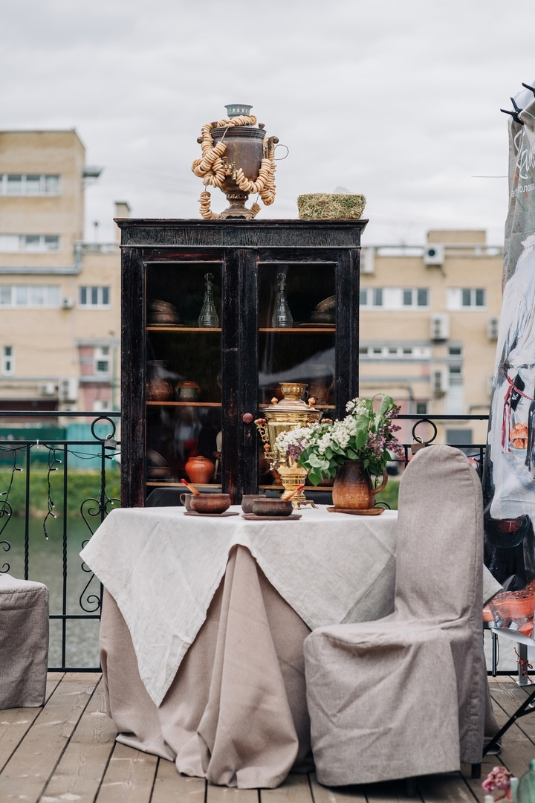

Арзамасский Трактирщикъ
5-й фестиваль
Большой семейный гастрономический праздник!
17 Мая | 12:00 - 17:00 | Парк культуры и отдыха им. А.П. Гайдара
Большой семейный гастрономический праздник!
17 Мая | 12:00 - 17:00 | Парк культуры и отдыха им. А.П. Гайдара
Становитесь частью большой гастрономической семьи вместе с фестивалем "Арзамасский Трактирщик".
17 Мая в Арзамасе Нижегородской области состоится пятый в истории города гастрономический фестиваль "Арзамасский трактирщик".
В кафе-участниках мероприятия можно будет попробовать блюда «трактирщика».
Фестиваль «Арзамасский трактирщикъ» – событие, которое нужно посетить! Приглашаем всех на гастрономическое празднество, которое перенесет вас в атмосферу трактира «золотого века Арзамаса». На фестивале можно не только насладиться вкуснейшими традиционными блюдами, но и принять участие в ярких конкурсах, мастер-классах и получить призы!
Просим всех подключиться к выбору самого народного блюда и голосовать сканируя qr код в кафе.
Необычные фотозоны каждого кафе на гастрофестивале "Арзамасский трактирщик" превратили ваши фото в настоящее приключение! От красочных тематических уголков до креативных декораций, каждое заведение подарило участникам массу ярких моментов для запоминающихся фотографий. Мы все погрузились в мир вкуса и эстетики вместе с веселыми фотозонами!
Это отличная возможность насладиться вкусной едой, познакомиться с культурным наследием Арзамаса и сделать яркие фотографии на фоне красочной атмосферы.
Давно пора. Когда приглашаю друзей и знакомых из других городов 17 мая в Арзамас, первый вопрос:" И какие блюда на вашем трактирщике?". А ответить мне нечего...
Телячьи хвосты. Ну ооочень жирные, просто плавали в жиру... А пирожки из "Реавиля", наоборот, очень сухие.
От себя могу добавить также комментарий от человека, который приезжал на первый фестиваль, и ему есть с чем сравнивать. Фестиваль растёт, меняется в положительную сторону, даже по количеству людей -это нельзя не заметить. Для следующих фестивалей, я считаю, которые однозначно будут, можно порекомендовать: 1) какое-то блюдо сделать основным, фестивальным, например огромный пирог с традиционным гусем, в Арзамасе столько умельцев испечь, и бесплатно угостить всех жителей может стать отличительной фишкой фестиваля, 2) увы, отсутствие туалетных кабинок в зоне питания, да есть стационарные туалетные комплексы, но элементарные удобства, даже те же самые краны с водой, для того чтобы помыть руки гостям, и участникам фестиваля отсутствовали, 3) также отсутствие информационных брошюр о том, какие мероприятия будут проходить в течение дня, да, они были на стенде, и в палатке туристического центра, но люди, как правило не замечают, это и сказалось на небольшом количестве человек при выступлении известной артистки -Елены Василёк; 3) также более грамотно включить в программу выступление, что -то с национальным Арзамасским колоритом, выступление клоунов, это здорово, но например веселые песни, театральная постановка, тем более тема фестиваля была отражена, как Пушкинская эпоха смотрелись бы актуальнее. Процветания фестивалю и новых творческих свершений, ведь люди из разных уголков, не только Нижегородской области посещают его ежегодно!
Мой первый приезд в ваш город и сразу такая удача! Побывать на Вашем фестивале Все очень интересно, ярко, аутентично. В восторге от фестиваля ну и конечно же от города